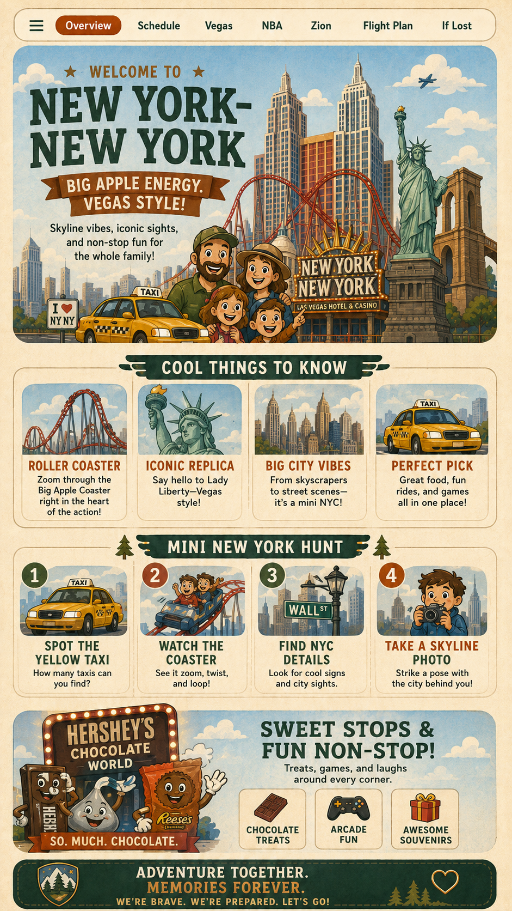

1. Sit back
Put your back against the seat.

For Lincoln
A simple confidence plan for takeoff, strange sounds, bumps, and nerves.
Put your back against the seat.
Keep your seat belt low and snug.
Ask, “Is this normal?”
Use box breathing until your body settles.
Breathe in 4. Hold 4. Breathe out 4. Hold 4.
Repeat 3–5 times. The goal is control, not perfection.